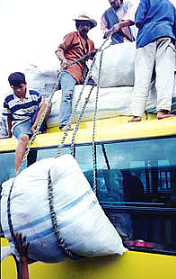
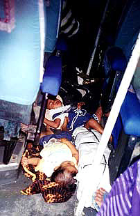
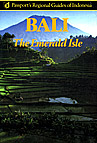

Sent: 15 Jan 2000 10:37 GMT
web version, with pictures. |
 |
| Prior Trav-E-Log: Sumbawa | Packing a bus means loading the top and tieing down. |
(Note:) This is the 20th in a series of Trav-E-Logs sent while traveling in S.E.Asia between Oct 16, 1999 and Jan 22, 2000.Hi folks,
Sent three updates yesterday, and here is the last of three today. All six should be read in the proper order if you want to really understand the situation. The order for those today are, "Boating", "Sumbawa", and finally this one, "Lombok".
=====================
When the bus finally gets on the ferry, the driver instructs the crew about fixing the toilet and cleaning the passenger compartment. I show the driver my ticket for Lombok, and tell him I want to go to Bali instead. He tells me, in English, to see the agent in Lombok. I thank him. One of the backpackers on board is upset we aren't getting the included meals, but I'm happy to be traveling in a time period known to be difficult. For six weeks people have been warning me against travel during the last days of Ramadan.
The ferry trip across to Lombok is uneventful, as is the bus trip across Lombok to Mataram, as Mount Rinjani is covered in clouds. When we pull into Mataram, I say my good-byes to Mat, Chris, and Jesper, and wish them good luck in the Gili islands. I attempted to leave the bus to buy a ticket, but the driver politely told me to sit back down. The driver tells the rest of us we are leaving immediately for the ferry port, and don't have time to take a meal break here. It's after 4 PM, and we've now been on this bus for 21 hours, with only cake, water, and a little rice served. One of the backpackers (from the USA) looses his cool over the food situation, and departs the bus, backpack and all, even though he had paid all the way through to Surabaya on Jawa. He says to beware, we are facing a 4-hour ferry ride, plus 2-hour bus ride, and that no food is sold onboard the ferry.
We get to Lembar port after a short bus ride, and the driver does not open the passenger doors right away. Each passenger is soon given a paper wrapped meal of rice with a little bit of stuff on top. As we finish eating these meals, the bus pulls aboard the ferry and we all pile out. The bus driver tells us the ferry will not leave for 30 minutes, so Colin, Hilda, and I go back to the port and buy a more significant meal, including a hot cup of tea. It comes with sugar, so I send it back for just tea. I gulp down the meal while the tea cools, then the ferry warning horn blows. I rush to the ferry, leaving my tea behind.
On the ferry, the bus doors are locked (sleep time for crew) so we spend the 4-hour crossing on deck. At the snack bar, I buy a coke and a small bag of "chips" to make sure I have change for the taxi or bemo ride I will probably need when arriving in Bali. Looking back at Lombok, we finally see the bashful Gunung Rinjani peak its summit through the clouds. In front of us, my old friend Gunung Agung on Bali also bears its peak in the setting sun. It feels like a homecoming.
As we get back on the bus, the driver shows me who to pay for the additional distance, and I ask the driver if it would be better to get off at Gianyar, instead of Denpasar, as my destination is Ubud. He agrees, and says the bus would let me and my pack off when the bus takes the turn for Denpasar. I say good bye to Colin and Hilda, knowing things will get hectic when the bus plugs the highway to let me off and retrieve my backpack from the compartment below. Sure enough, 10:30 at night, the bus leaves me at the side of the crossroad, points me in the right direction, and fades out of site.
I see a group of motorcyclists in the distance, so I walk up and greet them. There are just no cars on the highway, so I take up the offer of motorcycle transport to Ubud, after explaining the backpack is very heavy, so please go slowly. 20,000 rupia is about what I would expect to bargain a private taxi for, but it has been 5 days since my last bath in fresh water, and my last good night's rest. By 11:15, I'm trying to wake someone up at the Hai Home Stay, my Bali home.
Bill